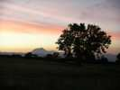
Splendide, Cervolix ! Pour le cadre, on irait même s'il n'y avait pas le cerf-volant ! Vue panoramique sur la plaine de la Limagne, les monts du Forez, la chaîne des Puys dont le Puy de Dome et Clermont-Ferrand... Meme la nuit, Clermont-Ferrand vu de haut est féerique...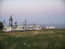
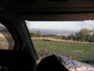
Au petit matin, météo extra : pas un nuage, vent force 2...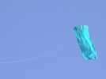
Les cerfs-volants décollent tôt, jamais vu autant de monde en l'air à 9 h...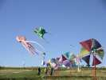
La bande aux Awita s'est déjà démenée pour son plaisir et pour le notre.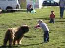
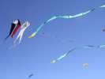
Les Turbulences commencent à monter, et ce ne sont pas les seuls... Il y aura même un joyeux mélange de trains !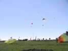
Profitant du vent qui faiblit, les paramoteurs viennent se mêler au bazar, avec des limites quelquefois un peu près, mais c'est eux qui voient !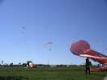
La pieuvre aimerait bien en attraper un, mais a déjà bien du mal à lever la tête !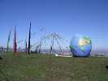
Michel Trouillet a installé son caravansérail en haut de la pente. Son énorme globe terrestre est intéressant, mais illustre un peu trop l'aplatissement aux pôles confirmé, vous le savez bien sûr, dès 1744 par l'Académie des Sciences.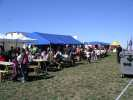
Mais en fin de matinée le vent tombe à peu près complètement... Bonne excuse pour aller chercher les plateaux et déjeuner sur les tables de l'aire camping-car, celles de la buvette...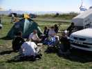
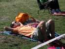
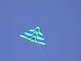
Mais en début d'après-midi, le vent redémarre. Les deltas remontent...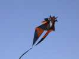
... comme ici ce delta légèrement modifié, avec des queues pyro, du Conyne, des cornes et 2 étages !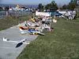
Les maquettes télécommandées sont aussi de la fête, avec des avions très variés, un bazar qui n'a rien à envier à celui des cervolistes...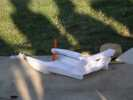
Cet engin hybride entre le canot automobile de course, l'hydroglisseur et l'avion n'a pas été vu en mouvement, je ne pourrai donc vous en dire plus...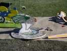
Mais ça, je peux vous dire que c'est un avion, je l'ai vu voler. Ben oui, c'est aussi un Saint-Nectaire avec une grosse mouche dessus !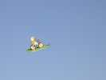
La belle Stroumpfette blonde est aussi revenue faire ses acrobaties, incroyables pour un modèle aussi simple aérodynamiquement et mécaniquement !...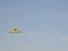
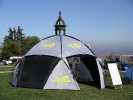
Un marchand de tentes présente une architecture géniale ou tous les mats sont articulés et reliés ensemble. Le montage est d'une grande simplicité : déplier et verrouiller !...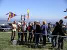
Joel connaîtra avec son moulin à eau-sablier-grenouille un succès rare, malgré le manque de vent qui rend longue l'attente du retournement !...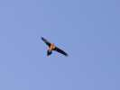
Un disciple de Michel Trouillet fait voler ce splendide Gypaète Barbu, le plus grand rapace européen, qu'il a construit sur un modèle de Michel.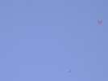
De vrais rapaces sont venus accompagner nos vols. Je n'ai pas reconnu le type mais je ne suis pas un spécialiste...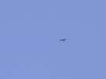
Ils montaient dans les thermiques, ont été voir un cerf-volant, ont trouvé qu'il était nul à voler hors des ascendances, et ont continué leur voyage...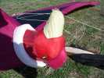
Mais mon Condor à moi n'impressionne pas beaucoup la faune du plateau !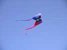
Quand même, ça continue à voler pas mal, comme ce Flow-form amélioré et très coloré !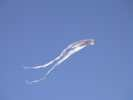
... ou ce delta à pois, dont j'ai cru que c'était à Gaby, mais pas du tout !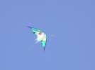
Encore un delta, ou en tous cas assimilable, bien que sa structure soit assez différente !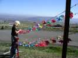
Guy Gosselin et madame sont là, avec leur tourniquettes...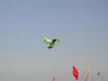
Une abeille vole, sur un modèle indonésien, mais plus grand et en spi/carbone. Elle n'aime quand même pas le vent fort.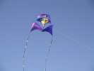
Un cerf-volant composé, stabilité inconnue, mais avec 2 queues, pas de problèmes...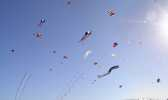
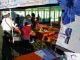
L'atelier de construction pour enfants offre, chose rare, des aigles chinois en bambou. Mais c'est plutôt un atelier de coloriage, les aigles sont tout faits... en blanc !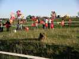
Logos a voulu participer aux Jardins de Vent et a trouvé une place au calme dans un banc de poissons (vus en partie à Outreau, rappelez-vous)...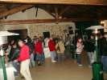
Journée finie ? Non ! D'abord Apéro, dès que vous avez trouvé le restaurant... Là, si vous demandez un punch (caché dans des bouteilles de jus de fruit), c'est offert (merci). Si vous demandez autre chose, c'est un Euro mais on ne vous le dit pas avant, on vous le réclame après ! Pas sportif...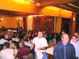
Mais le restaurant est bien, cadre agréable et service impeccable... Le discours du chef annonce un léger déficit, qui sera supprimé l'année prochaine (car on paiera plus cher...).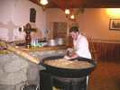
Le plat principal : de la cuisine locale auvergnate : tartiflette, préparée dans cette petite poêle par un costaud qui touille, et c'est dur !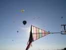
Dimanche matin, la journée commence par les montgolfières. On ne les voit pas beaucoup, elles partent de je-ne-sais-où et passent sur le plateau où partent à l'opposé...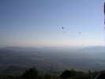
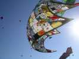
Michel trouillet a sorti sa méga-bâche mais elle ne volera qu'une dizaine de minutes, faute de vent...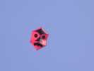
Un Rokkaku aux armes d'un coléoptère, le Gendarme ou Suisse (Pyrrhocoris apterus)...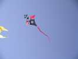
Pas mal non plus ce cerf-volant très découpé, mais il semble que sa plage de vent soit assez réduite : trop faible, pas assez de surface, trop fort il plie beaucoup !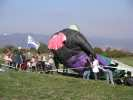
Mais le vent s'écroule de plus en plus ! Le mégabyte fait de même sur les spectateurs plus ou moins rassurés...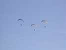
Les paramoteurs profitent du ciel plus libre pour revenir faire un tour, traînant une queue de bien 100 m !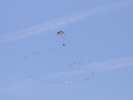
Et ils vont faire des figures avec. La veille, ils avaient une queue en plastique qu'ils essayaient de s'arracher, ou de lâcher et rattraper !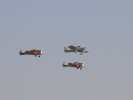
Une patrouille de vrais avions passe en formation. Malheureusement les voltigeurs en Cap de l'année dernière ont perdu un membre et ne viendront pas cette année...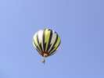
Une mini-montgolfière tenue en laisse fait de l'animation en larguant des confettis (des gros, 5 cm) une fois arrivée assez haut. Original et très poétique...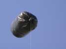
Un ballon solaire volera aussi, moins poétique par son coté "poubelle", c'est sûr, mais toujours surprenant par la simplicité du principe.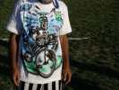
Il y avait aussi un peintre sur T-shirts à l'aérographe, doté d'un remarquable talent, tant dans la réalisation que dans la conception des images. Vous aurez bien sûr reconnu le porteur !